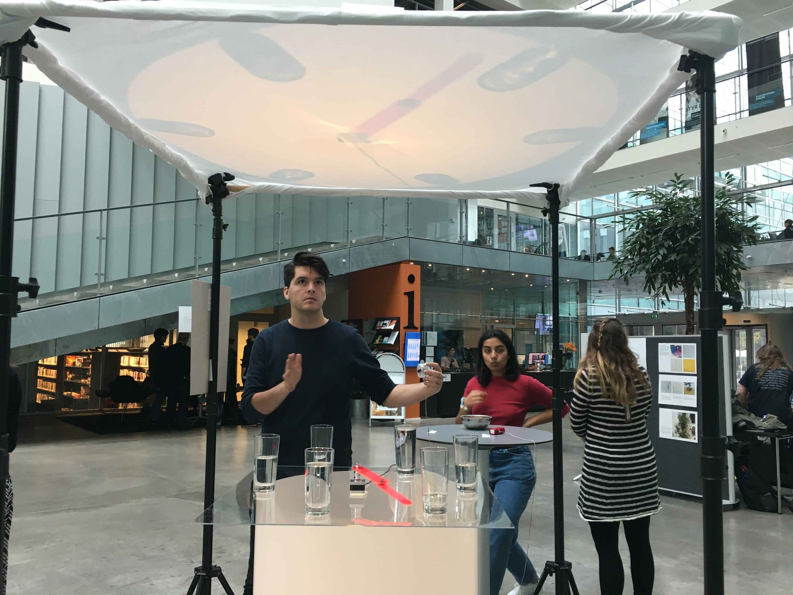
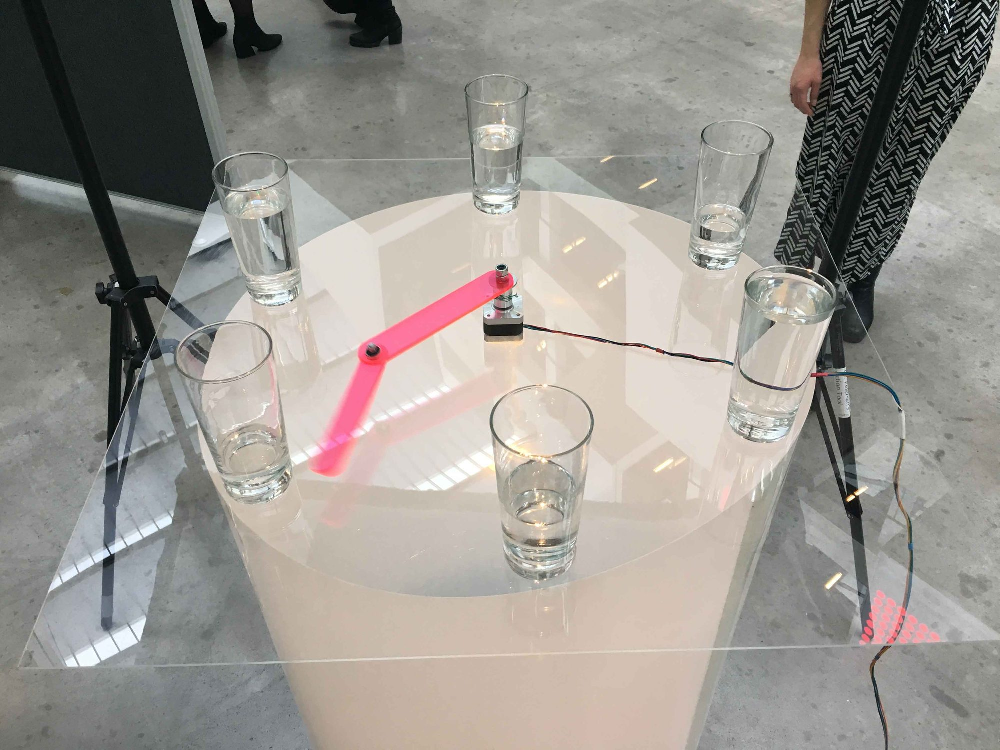

Chaotic Motion
Dynamic behaviour through chaotic motion [2017]
Our eyes are constantly looking for patterns and our ears are constantly listening for rhythm. It seems that we, collectively as a human race, become uneasy in the midst of chaos. This is why we build visual and audible structure –whether that be for a song or a picture. There are rules to abide by: a subject in focus or a meter to follow. Our hope, with this project, was to break this uneasiness. By building a double pendulum, a formation which has a strong sensitivity to initial conditions, we created a visual and audible experience that follows no rules and embraces the chaotic.
"Push the button, get a little close, and join the chaos."
In collaboration with Anton Zeuthen, Simrun Mannan & Amanda Barlebo. Exhibition as part of a course in Digital Experience & Aesthetics.

We set out with an intent to create an artefact that had randomness as its central component. In order to make the random motion, we chose to work with the double pendulum as our central actuator. We found that alone, the stepper motor did not mimic the motion of a vertical pendulum. In contrast, it created a constant predictable motion. To create a random path for the pendulum, we used the glasses as obstacles, resulting in a highly unpredictable path.

When the rotation of the double pendulum was working, we wanted to put in a larger context to figure out what experience we wanted to give the users. We started off with light and slowly progressed into an audio-visual experience, using glasses (with liquids), as the medium for sound when the pendulum hits them.
Our final prototype has a stepper motor as its main actuator. The double pendulum attached to the motor consists of 3mm semi-transparent acrylic arms, connected with two ball bearings. To create the sound and random motion, we have six identical glasses filled with different amounts of water, which results in a random pattern of different sounds. The pendulum and glasses are lit from below by a small LED spot, casting a shadow to a white linen suspended above the artefact.

When designing our prototype, we initially started with thin pieces of wood. However, the material was too heavy, so we tried a different material Plexiglas. This also had another advantage, in that the transparency was visually interesting. In our final prototype, we used a 3mm acrylic, as the colour and transparency has a unique visual effect.